Hollowhead
When you gain a key:
if you have only 2 other active cards: gain an additional key.
if you have only 2 other active cards: gain an additional key.
God-Struck Fool
While this is active, you get a bonus die that is all 1s.
On Scry, if you did not score any Potency dice: incinerate this card.
On Scry, if you did not score any Potency dice: incinerate this card.
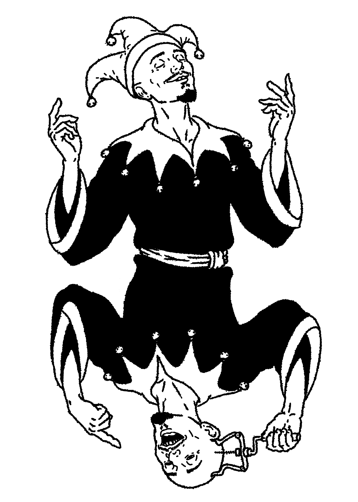
Knower of True Names
Any time you score a set without F: bury a W on this card.
On Scheme start, if there is W buried:
you must swap in a W crystal, then unbury all W on this card.
On Scheme start, if there is W buried:
you must swap in a W crystal, then unbury all W on this card.
Lockpicking Archon
Relinquish this card, attaching it to any players card.
When the attached card is incinerated, this card is incinerated too.
That player cannot lose teeth, and cannot gain keys.
When the attached card is incinerated, this card is incinerated too.
That player cannot lose teeth, and cannot gain keys.
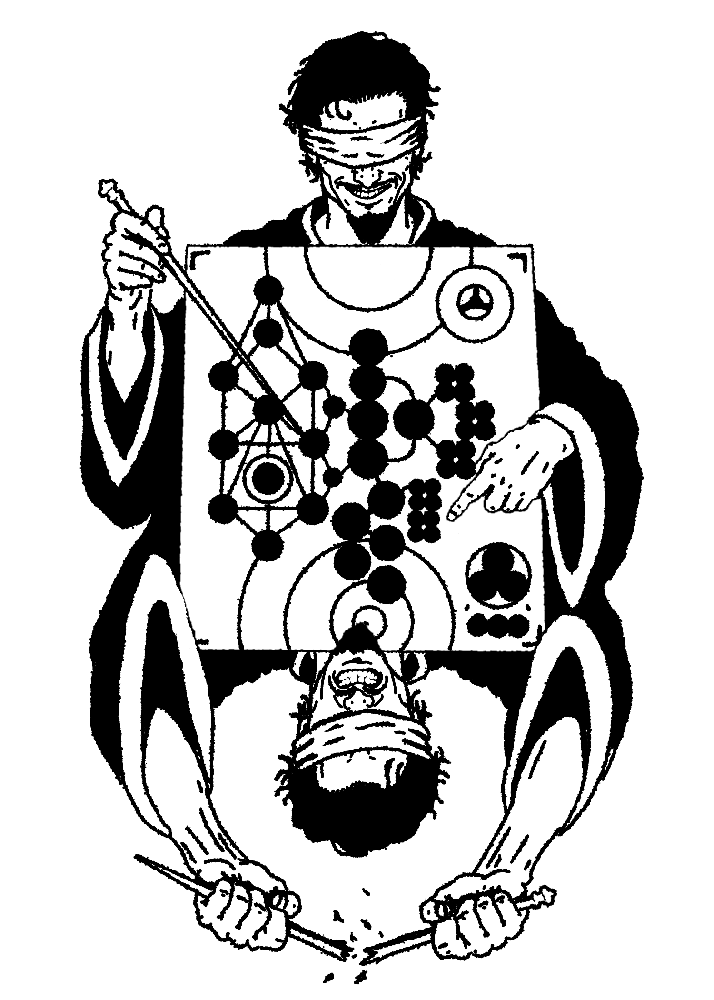
Mooncalf Mother
Once per roll, you may discard a die to rotate a die to any face.
Carrier of the Droplet
At any time, you may spend 3W to invert a card.
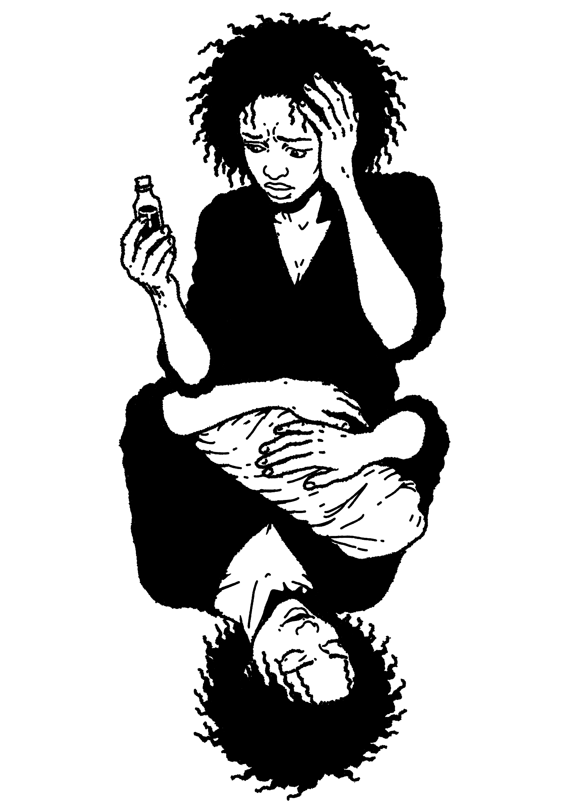
Gargoyle Mother
While this is active, you only need to commit/discard 4 dice per roll.
Famed Freemason
While this is active, you get a bonus Potency die.
You cannot score:
Three Straight, Two Color-Pairs, Triplet, Four of a Color.
You cannot score:
Three Straight, Two Color-Pairs, Triplet, Four of a Color.
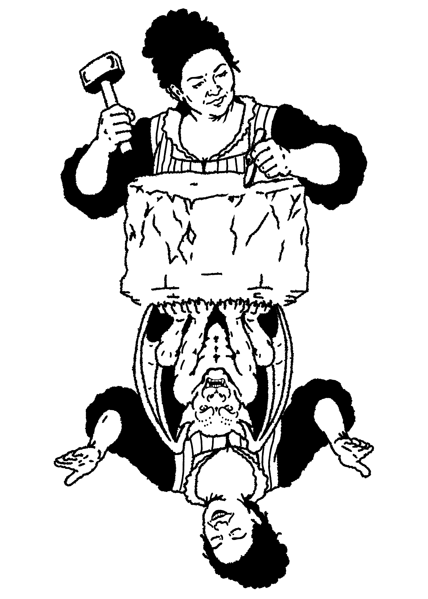
Incorruptible Judge
While this is active, you get a bonus die that is all E
Any time you score a set without E:
convert all of a non-E token to E
If you get 0 non-E tokens: lose a tooth
Any time you score a set without E:
convert all of a non-E token to E
If you get 0 non-E tokens: lose a tooth
Hardnosed Idealist
On Scheme start, incinerate this card to:
choose a die, swap all its crystals for a single color of your choice.
choose a die, swap all its crystals for a single color of your choice.
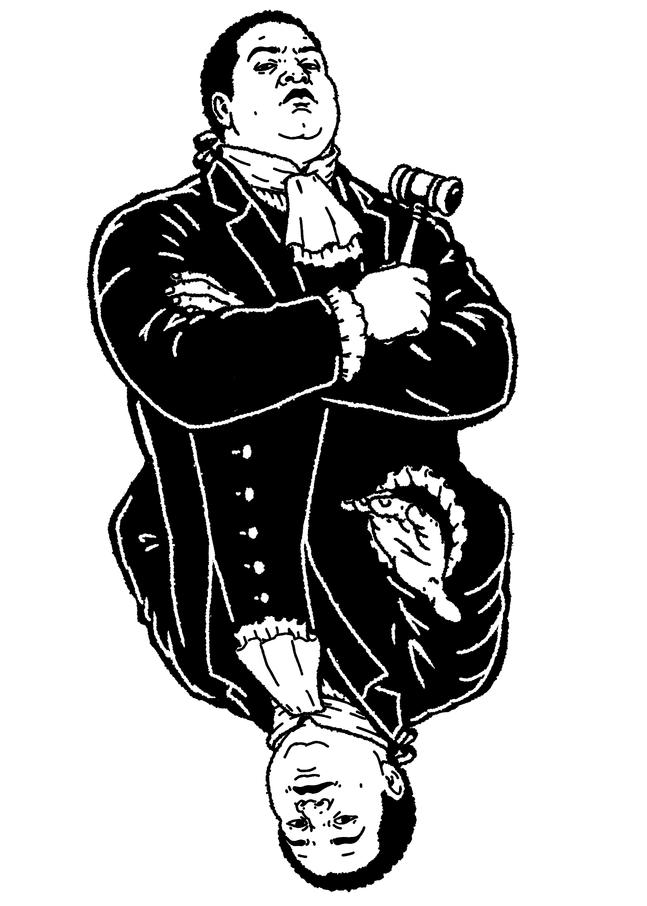
Plate-Plundering Deacon
Whenever you claim a card, you may spend 2Q to claim any other.
(this claim automatically loses against wagers)
(this claim automatically loses against wagers)
Pious Parishioner
If you incinerate two cards in a single round:
gain 1 key and incinerate this card.
gain 1 key and incinerate this card.
Doomed Romantic
When you incinerate this card:
swap tooth count with another player then lose 1 tooth
swap tooth count with another player then lose 1 tooth
Kismet Syzygyst
On Scheme start: incinerate this card to:
permanently gain another elemental die, starting with only F faces
permanently gain another elemental die, starting with only F faces
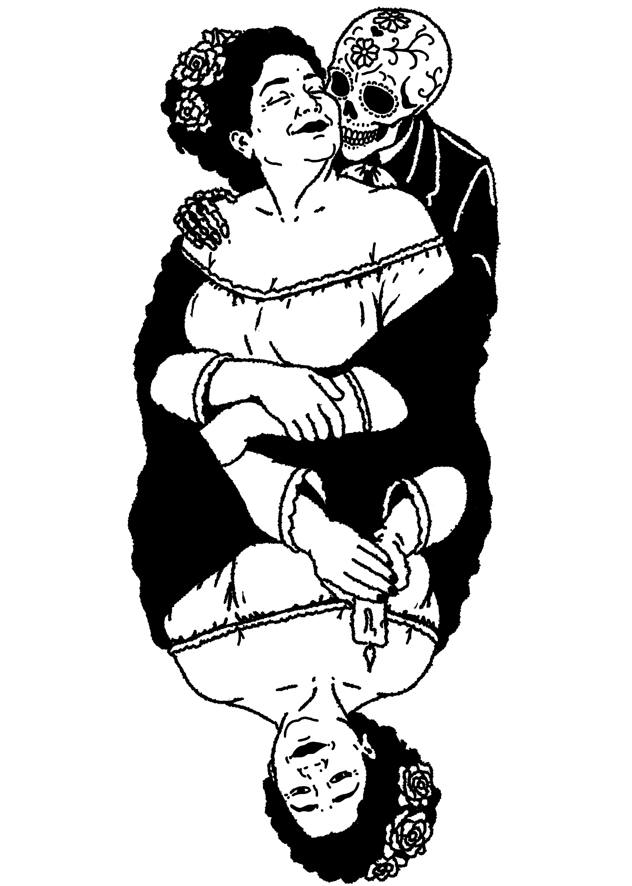
Promising Pugilist
Choose one of the following scoring sets:
Quadruplet (bury E), Five Straight (bury W),
Five of a Color(bury F), Four Air (bury A)
When you score that set:
gain a key and if you have >1 tooth lose a tooth
Quadruplet (bury E), Five Straight (bury W),
Five of a Color(bury F), Four Air (bury A)
When you score that set:
gain a key and if you have >1 tooth lose a tooth
Bruised Boxer
Whenever you would lose a tooth, instead you may:
spend all tokens of 1 type and incinerate two other cards
spend all tokens of 1 type and incinerate two other cards
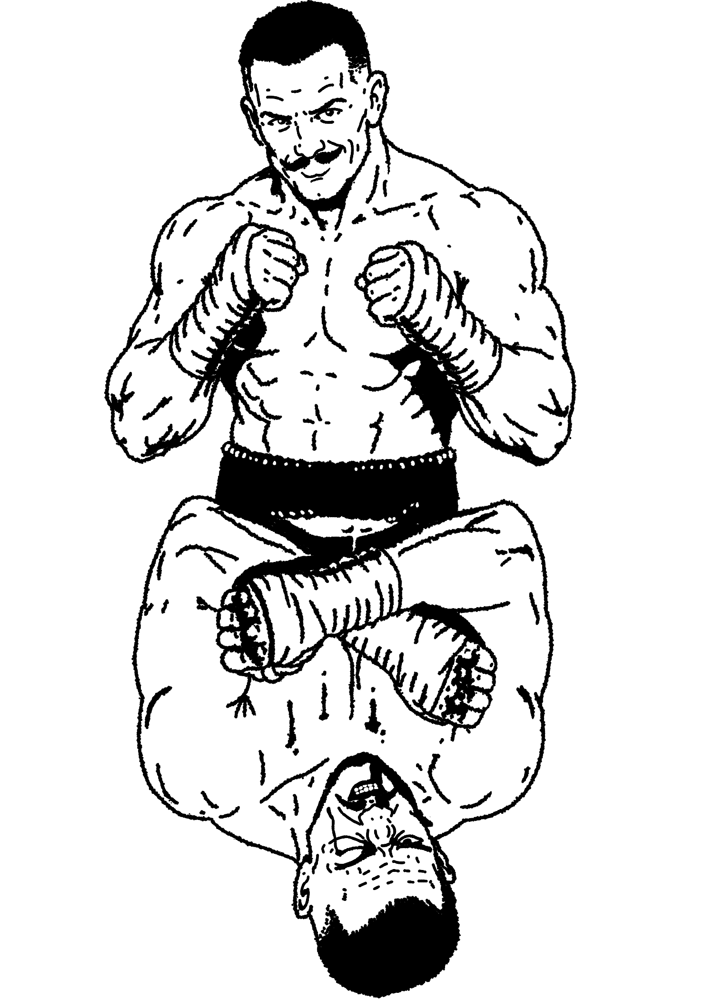
Hard-Weathered Quarryman
On Scheme start, you may spend 1A to swap in a 6 for any Potency
Stonefaced Stoic
Whenever you would lose a tooth,
bury it on this card instead.
If 3 teeth are buried here, incinerate this and lose all 3.
If this card is incinerated by another card, you get them all back.
bury it on this card instead.
If 3 teeth are buried here, incinerate this and lose all 3.
If this card is incinerated by another card, you get them all back.
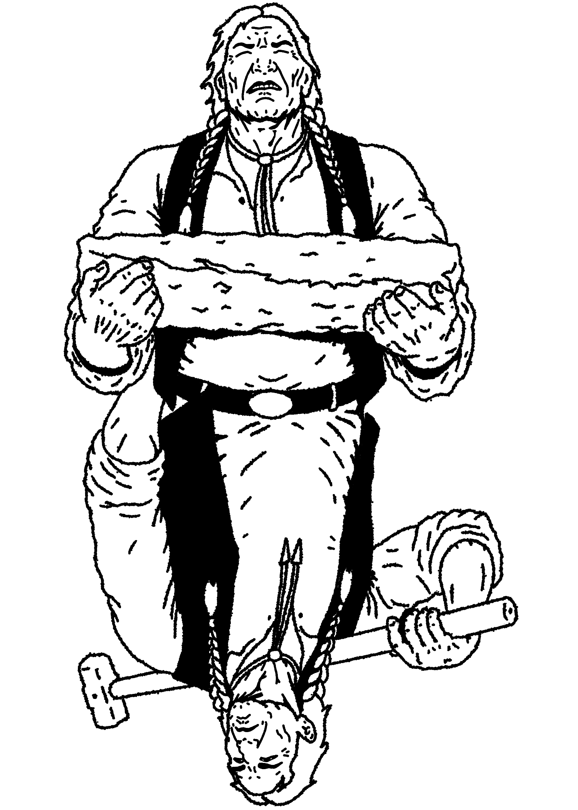
Pillar-top Hermit
While this is active, you get a bonus die that is all 6s.
Whenever you would gain tokens, gain 1 less
Whenever you would gain tokens, gain 1 less
Bird-Fouled Hagia
On Scheme Start, bury 1Q here.
Whenever you gain Q from anything else, gain all Q buried here.
If 5 or more Q are buried here, incinerate this card and gain 1 key.
Whenever you gain Q from anything else, gain all Q buried here.
If 5 or more Q are buried here, incinerate this card and gain 1 key.
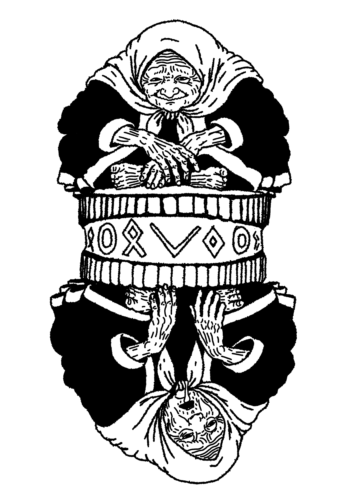
Barefoot Pilgrim
On Scheme start: incinerate this card to:
permanently gain another elemental die, starting with only W faces
permanently gain another elemental die, starting with only W faces
Marooned Wanderer
Whenever you incinerate a card, you may:
spend 1Q to draw and claim the top card.
spend 1Q to draw and claim the top card.
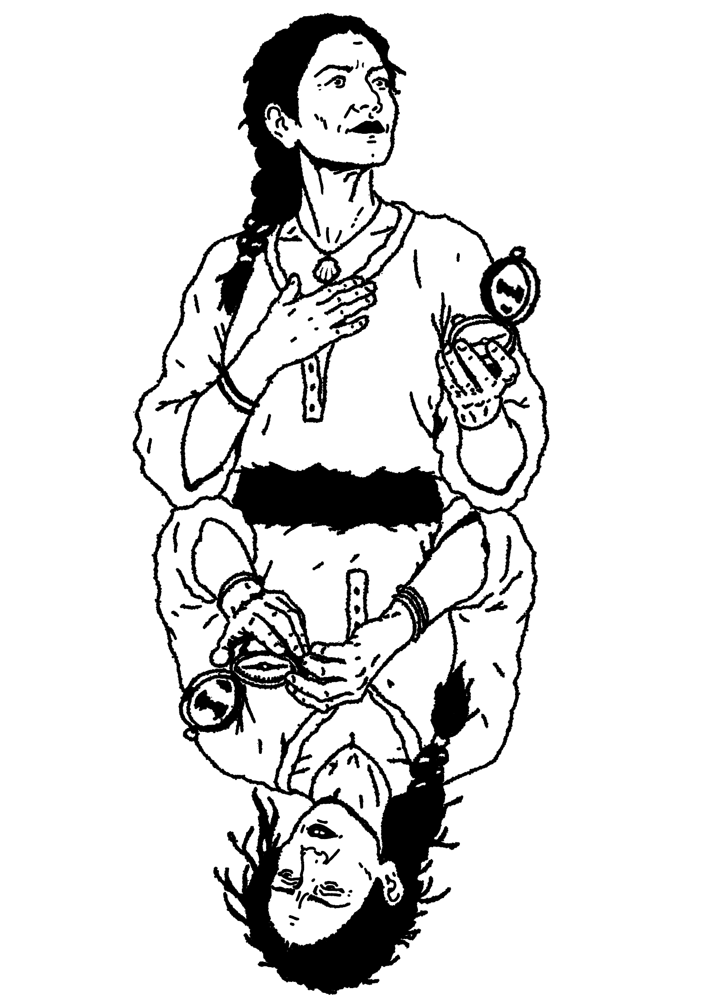
Clamp-Turning Examiner
Relinquish this card, attaching it to an opponent's card.
When the attached card is incinerated, this card is incinerated too.
Whenever they gain a new card, you may choose to incinerate
the new card and Clamp-Turning Examiner.
When the attached card is incinerated, this card is incinerated too.
Whenever they gain a new card, you may choose to incinerate
the new card and Clamp-Turning Examiner.
Confessional Magistrate
On Scheme start, you may swap any two faces on your dice.
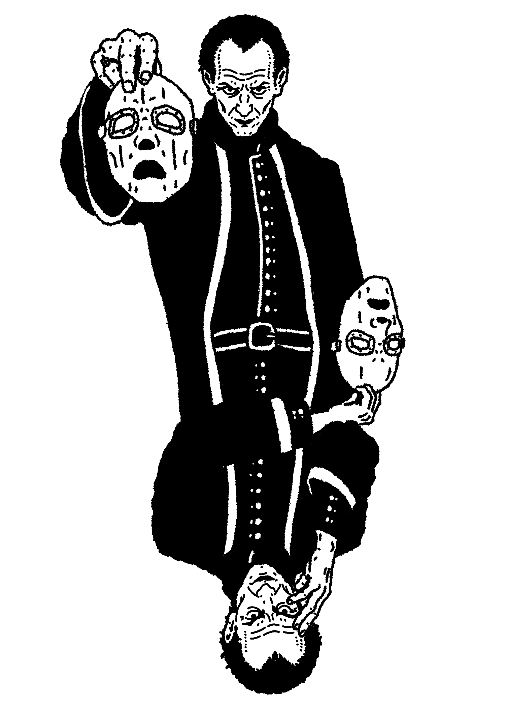
Self-Sacrificant
Whenever you are allowed to make a swap, you may instead:
pay 3 of any one token color to gain 1 key
pay 3 of any one token color to gain 1 key
Post-Fate Oblate
You can now score Four Air with four fire faces
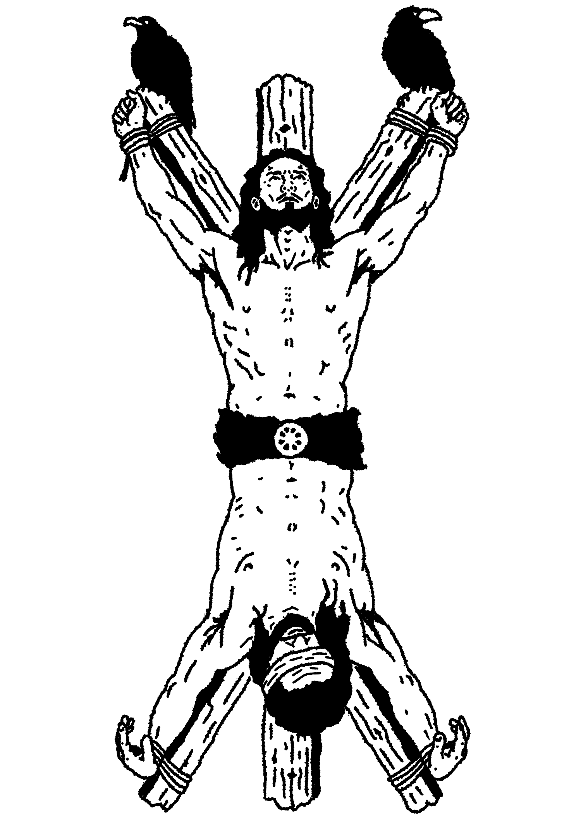
Toothless Grinner
When a card reads "or", you may spend 2Q to substitute "and"
Corpse-Like Pauper
On Scheme start, you may replace a 1 with a 9 on a Potency die
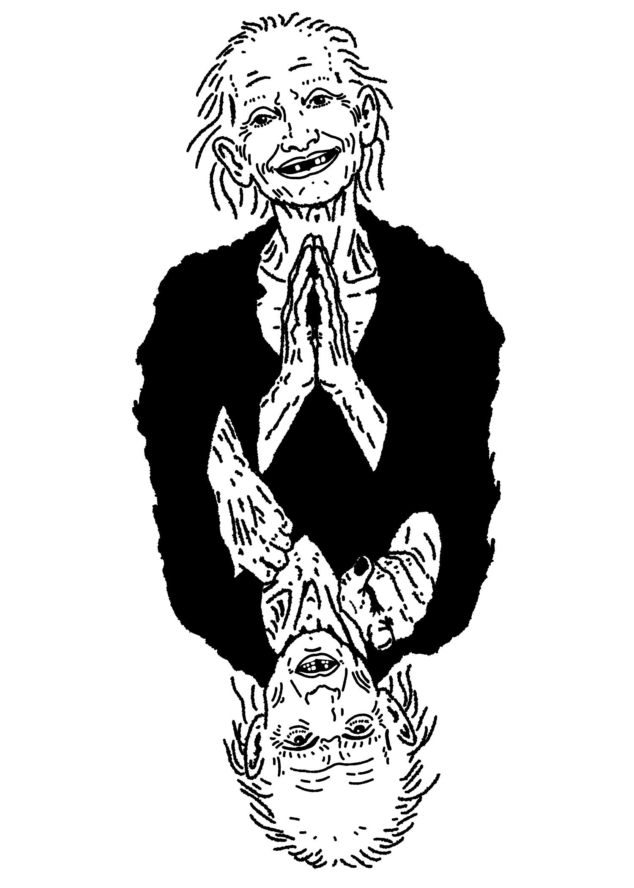
Binger
You can now score straights with one gap of 1
(E.g., 1,2,4 scores as a Three Straight)
(E.g., 1,2,4 scores as a Three Straight)
Purger
On Scheme start, you may decrease a Potency by -1
Whenever an opponent claims a card, you may:
lose a tooth and incinerate this card
to claim that card yourself instead
Whenever an opponent claims a card, you may:
lose a tooth and incinerate this card
to claim that card yourself instead
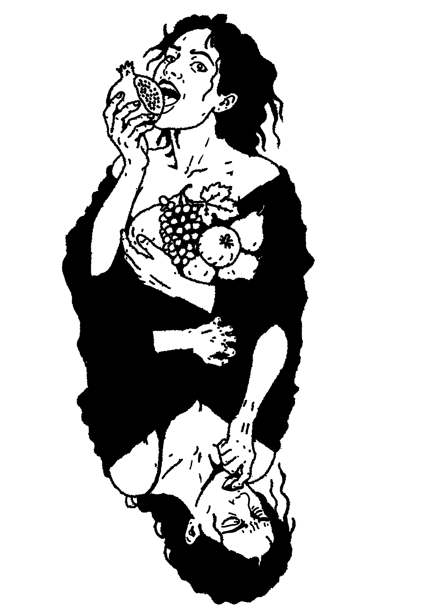
Pact Proctor
Spend 2Q and lose one tooth to resurrect any incinerated card
Wrathful Sovern
Whenever an opponent loses a tooth,
you may spend 3F to gain a key
you may spend 3F to gain a key
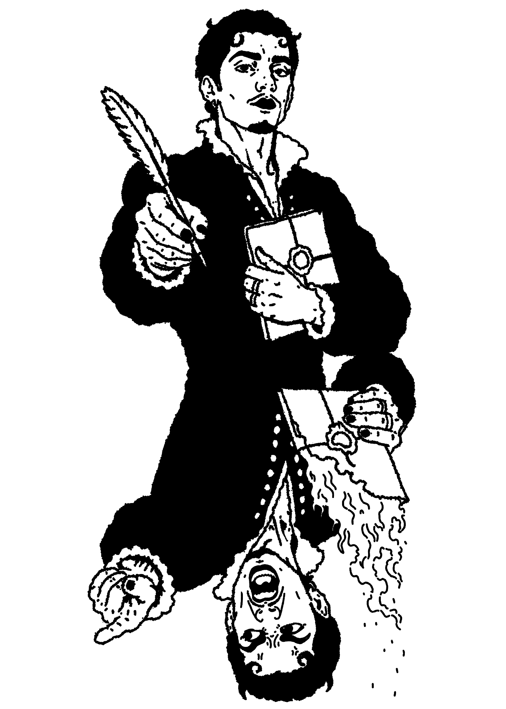
Faustian Scholar
Spend 1 tooth to lay this card upside down:
it permanently becomes a new empty card slot
it permanently becomes a new empty card slot
Tumorous Magi
Spend 1Q and lose a tooth and incinerate this card
to permanently gain another Potency die.
to permanently gain another Potency die.
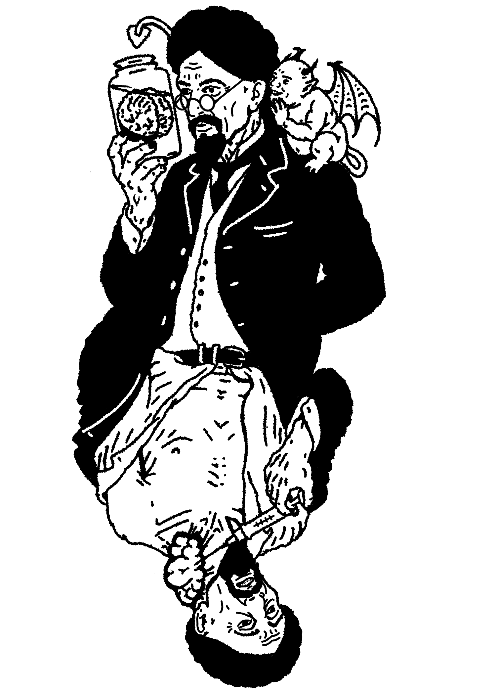
Silent Companion
On Scheme start: you may spend 2Q to
replace an elemental face with Q - which can be counted as any color
replace an elemental face with Q - which can be counted as any color
Patient Confidant
On rolling an E, you may rotate it to a W
On rolling a W, you may rotate it to an E
On rolling a W, you may rotate it to an E
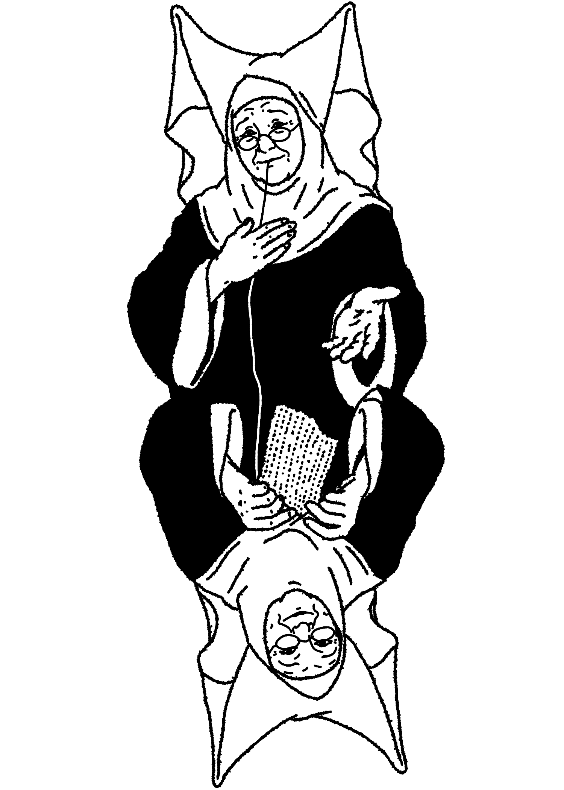
Sane Sorrowful
While this is active, you get a bonus die of all W
Any time you commit one or more W dice: discard 1 die
Any time you commit one or more W dice: discard 1 die
Insane Incandescent
While you have this active, you get a bonus die that starts empty.
(empty faces don't really score - but can be committed, discarded, etc)
All players now require one extra key to win.
(empty faces don't really score - but can be committed, discarded, etc)
All players now require one extra key to win.
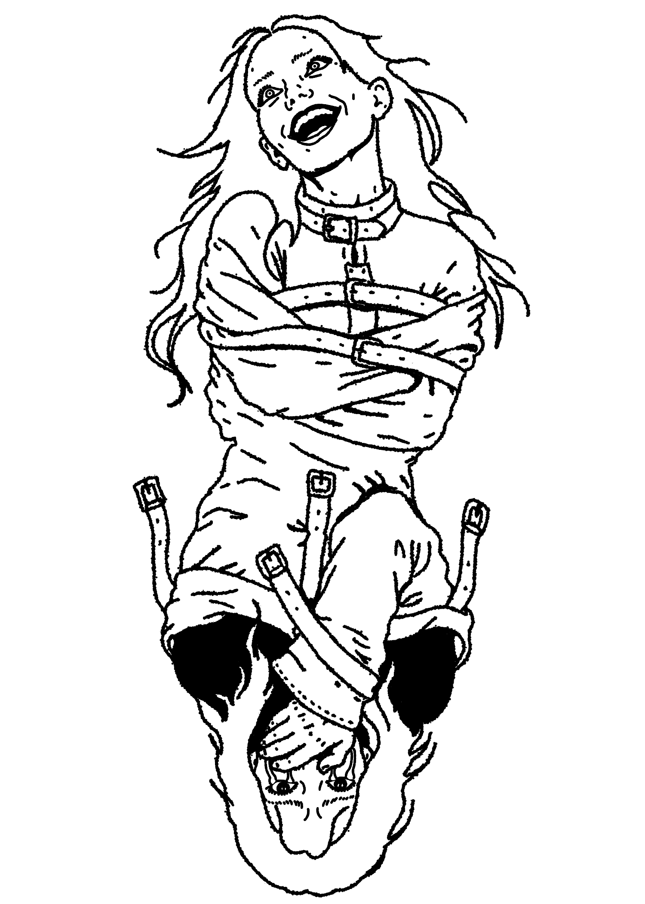
Reservoir of Sunshine
You may discard a die and spend 1Q to bury any token on any card
Beloved Homunculus
On Scheme start, choose one of your dice:
swap all its crystals for a single number of your choice
and incinerate this card.
swap all its crystals for a single number of your choice
and incinerate this card.
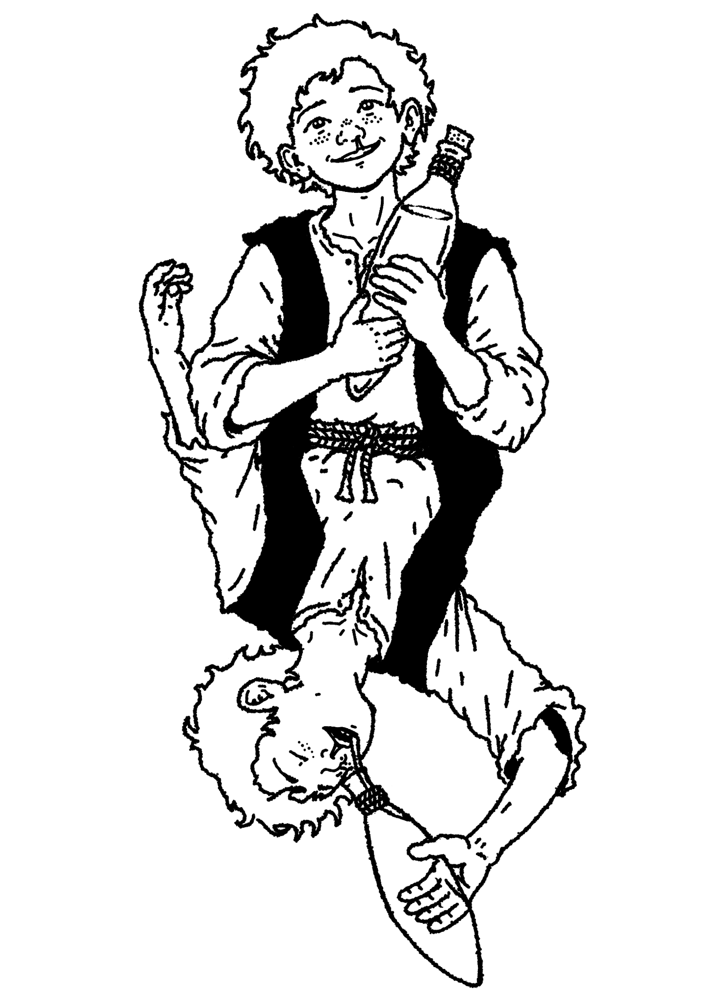
Wailing Confessor
While this is active, you get a bonus die of all A
Any time you score a set without A:
if you have more teeth than discarded dice, lose a tooth
Any time you score a set without A:
if you have more teeth than discarded dice, lose a tooth
Voiceless Accused
While this is active, you get a bonus die of all E
You cannot score a set with fewer than 5 dice.
You cannot score a set with fewer than 5 dice.
Mocking Recluse
When you incinerate this, gain a face of any color.
During Scheme, you may swap it in.
During Scheme, you may swap it in.
Jar Dweller
On rolling an F, you may rotate it to an A
On rolling an A, you may rotate it to an F
On rolling an A, you may rotate it to an F
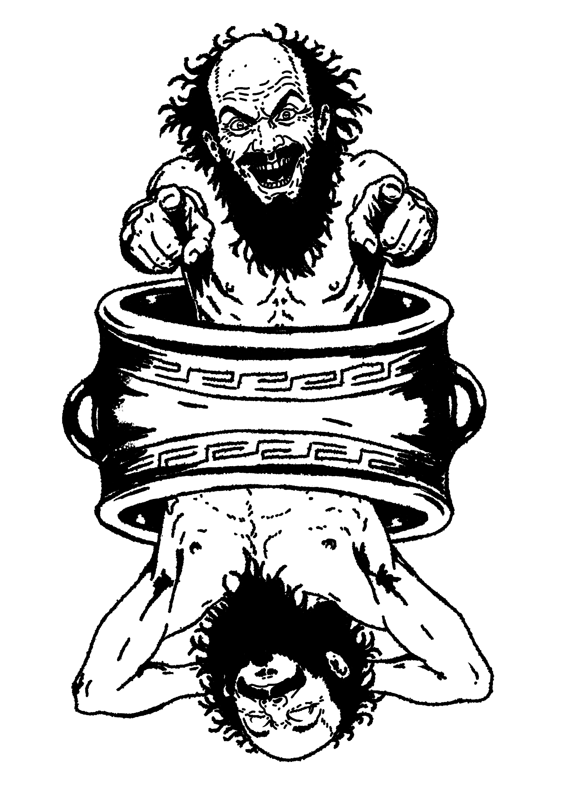
Primed Pomologist
On Scry start, look at the highest Potency among discarded dice:
gain that many E.
If it is 6+, you may instead gain 2Q.
gain that many E.
If it is 6+, you may instead gain 2Q.
Charitable Ciderist
Any time you gain E, or W, you may gain one more
On scoring four earth: gain 1 key and incinerate this card.
On scoring four earth: gain 1 key and incinerate this card.
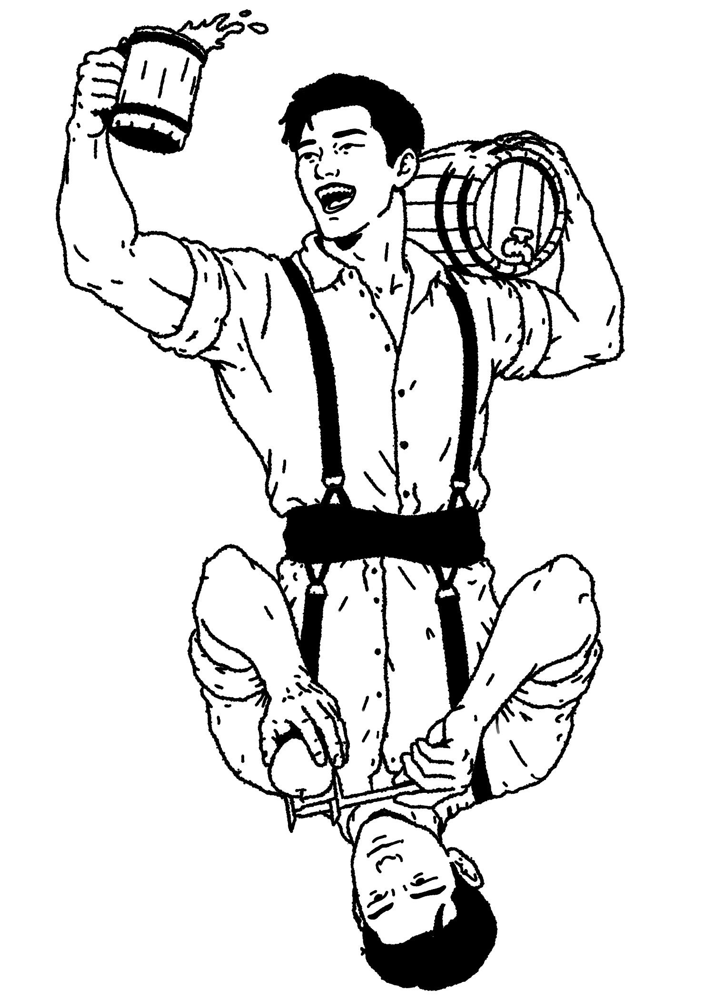
Passive Puffer
Whenever you commit 5 or more dice at once,
you may uncommit another die.
On Scheme start, you may increase a Potency by +1
you may uncommit another die.
On Scheme start, you may increase a Potency by +1
Active Assistant
You may now spend 2 of any token to get 1Q
On scoring a triplet: gain 1 key and incinerate this card.
On scoring a triplet: gain 1 key and incinerate this card.
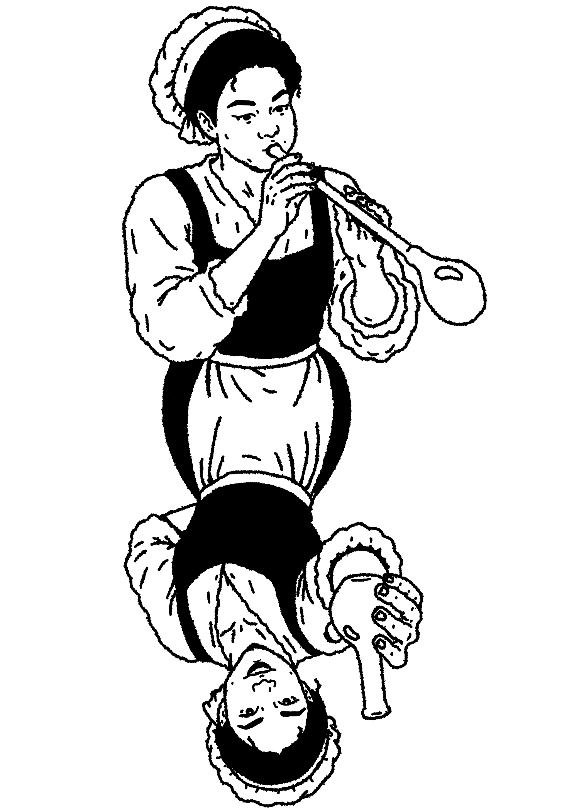
Alembic Servitor
While this is active, you get a bonus die that must remain empty,
(can't really score - but it can be committed, discarded, etc)
(can't really score - but it can be committed, discarded, etc)
Burn-Scarred Glasswright
Whenever you have 5 dice scoring the same set: gain 1 E.
Spend 2E to gain 1 key and incinerate this card.
Spend 2E to gain 1 key and incinerate this card.
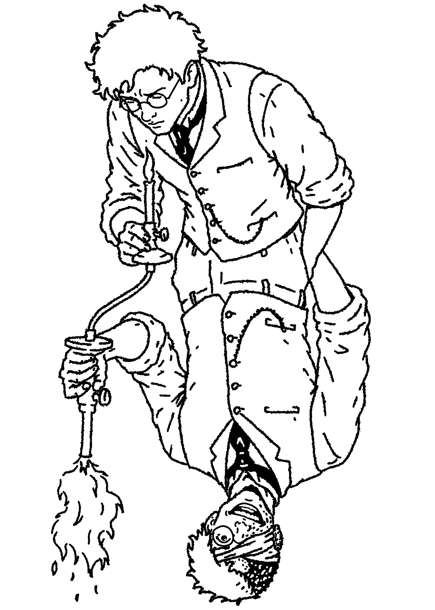
Bezoar Seeker
On rolling an E, you may discard a Potency die to gain E equal to that Potency.
On rolling a W, F or A, you may spend 1 E
to rotate a ready die one face over in either direction.
On rolling a W, F or A, you may spend 1 E
to rotate a ready die one face over in either direction.
Sadistic Shepherd
Incinerate a card to bury 1E on this card.
On Scheme start, spend 5 buried E to gain an E face.
Spend 2E to gain 1 key and incinerate this card.
On Scheme start, spend 5 buried E to gain an E face.
Spend 2E to gain 1 key and incinerate this card.
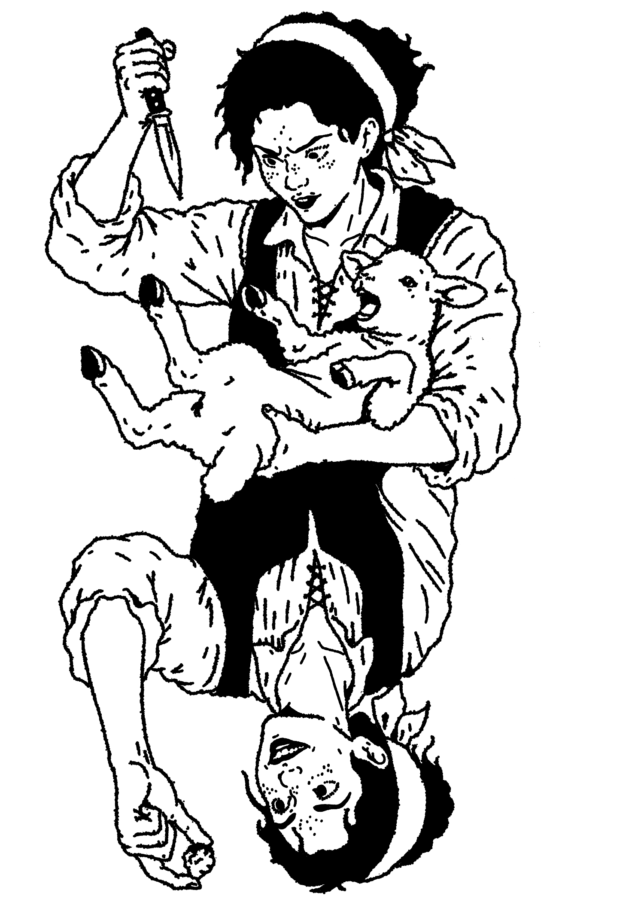
Reeking Husk
On rolling an E, you may discard that die and a Potency die, and gain E equal to the Potency
On rolling an A, you may discard that die and a Potency die, and gain A or E equal to the Potency
On rolling an A, you may discard that die and a Potency die, and gain A or E equal to the Potency
Discarded Follower
Whenever you commit a triplet or quadruplet,
rotate and commit a ready die.
Spend 7 of any one token type to gain 1 key.
rotate and commit a ready die.
Spend 7 of any one token type to gain 1 key.
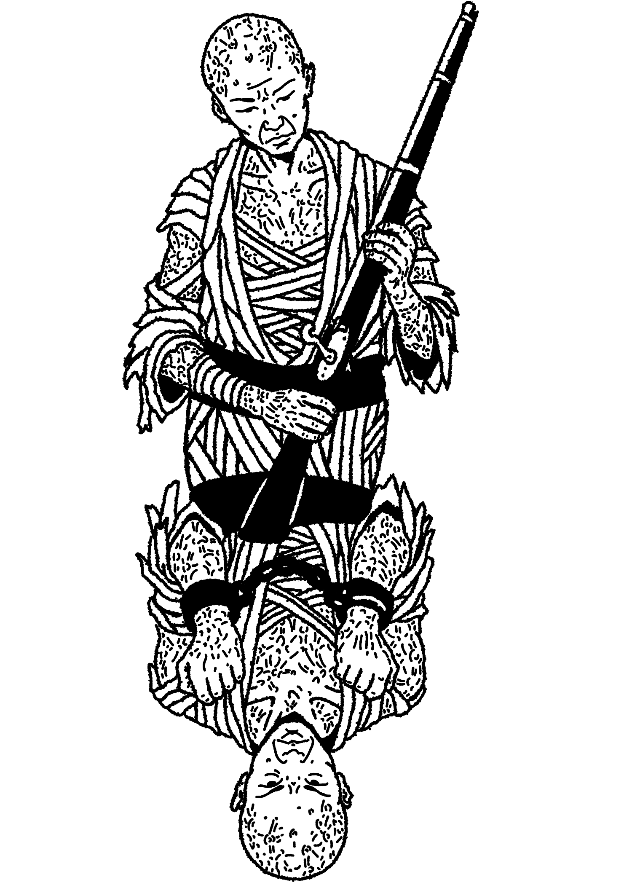
Shrewd Quaker
On Scheme start, you may decrease a Potency by -1
Whenever you score Two Color-Pairs or Four Pairs,
you may spend 3E to get 2F or 2A
Whenever you score Two Color-Pairs or Four Pairs,
you may spend 3E to get 2F or 2A
Hard-Tack Baker
You can now score Triplets as Quadruples.
You cannot score any straights.
You cannot score any straights.
Perennial Pruner
On Swig start, you may spend 2E to rotate and commit a ready die.
Whenever you win a wager, gain a tooth.
Whenever you win a wager, gain a tooth.
Haphazard Herbalist
Whenever you score a Two Color-Pairs, Triplet, or Quadruplet, choose:
spend 8E or lose 1 key to regain 2 teeth
spend 8E or lose 1 key to regain 2 teeth

Venomous Vessel
Whenever you roll an E, discard that die to bury 1E on this card
Whenever you roll two As, discard those dice to double the E on this card
Whenever you roll a W, discard that die to gain the E buried on this card
Whenever you roll two As, discard those dice to double the E on this card
Whenever you roll a W, discard that die to gain the E buried on this card
Sinuous Acolyte
Whenever you roll an E, discard that die to bury 1E on this card
On Swig start, spend 1 buried E to rotate and commit a ready die.
On Swig start, spend 1 buried E to rotate and commit a ready die.
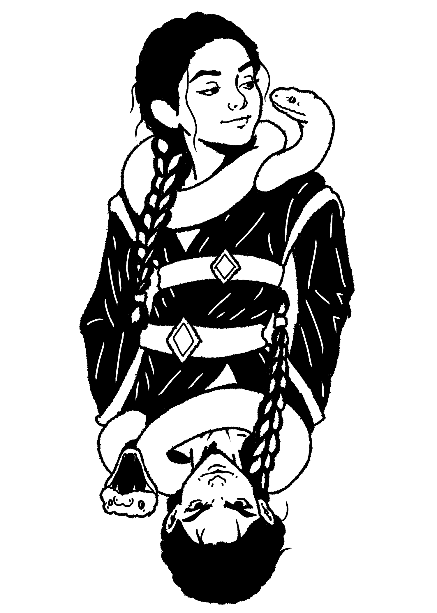
Oathbreaker
Whenever you would lose a tooth, instead you may:
spend 5E or incinerate this card
spend 5E or incinerate this card
Oathkeeper
Whenever you score a Triplet, or Quadruplet: gain 1Q
Whenever you score a straight: incinerate this card
Whenever you score a straight: incinerate this card
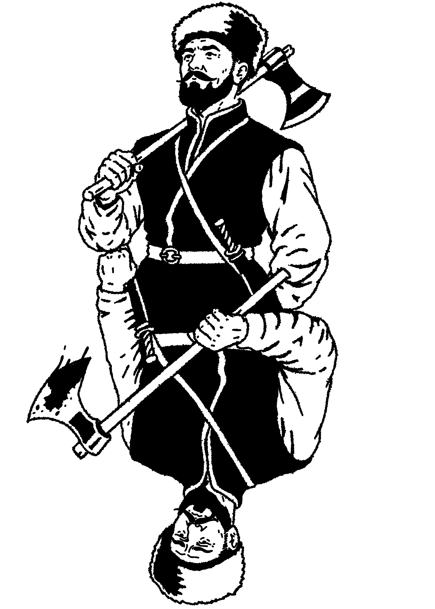
Solifactory Smith
Whenever you incinerate a card: gain 1E
If you score a set of all E, or a set of all >= 4: gain 1Q
If you score a set of all E, or a set of all >= 4: gain 1Q
Brawny Striker
On Scheme Start:
lose 2 teeth or spend 8E or spend 4Q or incinerate two cards
to gain 1 key
lose 2 teeth or spend 8E or spend 4Q or incinerate two cards
to gain 1 key
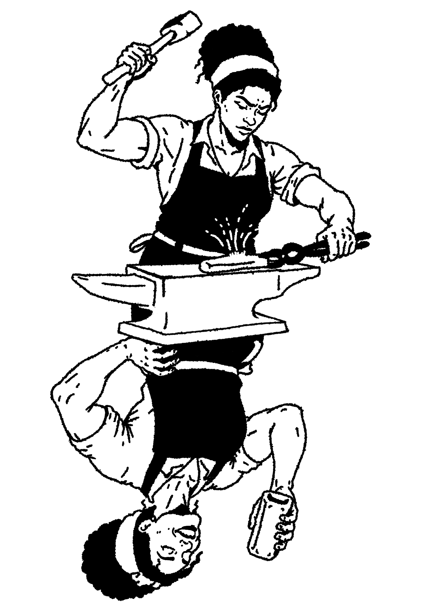
Hopeful Sower
Whenever you score Two Color-Pairs, Triplet, or Quadruplet, choose one:
* gain 2E
* bury one of any token type on any card
* gain 2E
* bury one of any token type on any card
Grain Hoarder
On Scheme start, you may replace any crystal with an E
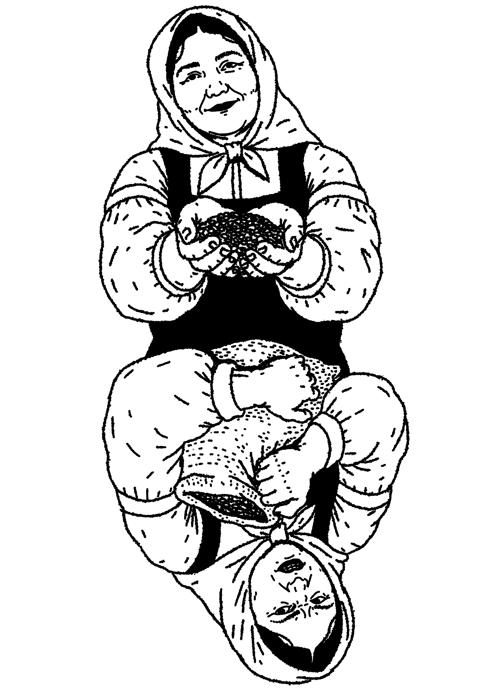
The Tallyman
Bury a Potency die on The Tallyman, starting on 1.
Whenever you incinerate a card, increment that die.
When the die reaches 6 - you get that die as a bonus Potency die,
as long as Tallyman remains active.
Whenever you incinerate a card, increment that die.
When the die reaches 6 - you get that die as a bonus Potency die,
as long as Tallyman remains active.
Dreaded Abacist
On Scheme start, you may increase a Potency by +1
On Scheme start, you may decrease a Potency by -1
On Scheme start, you may decrease a Potency by -1
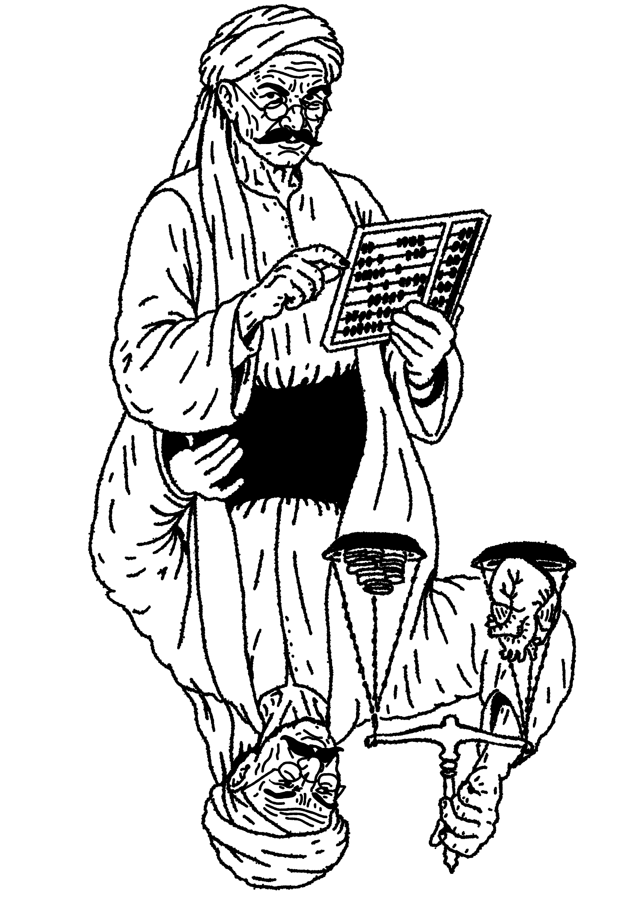
Spagyric Physician
Whenever you discard an Elemental die, bury 1 token matching its face's element on this card.
Whenever you score Triplet or Quadruplet gain this card's buried tokens.
Whenever you score Triplet or Quadruplet gain this card's buried tokens.
Arsenic Apothecary
When you incinerate this, gain an E face.
During Scheme, you may swap it in.
During Scheme, you may swap it in.
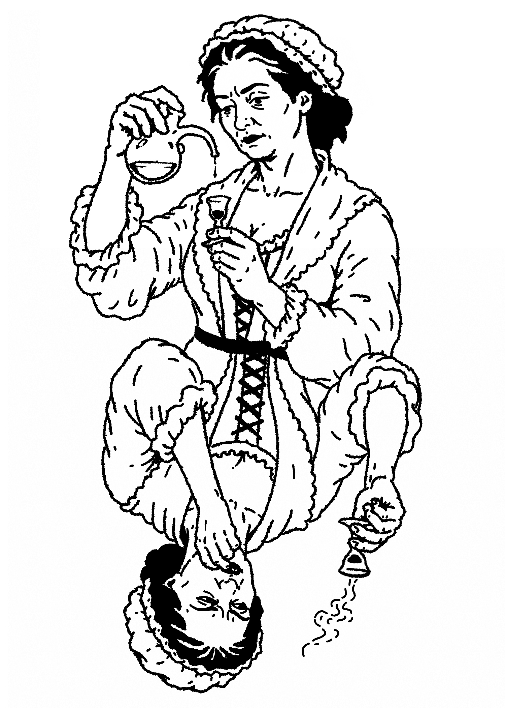
Iatrochemist
If you commit 7 dice at once, you may bury an E on this card.
Spend 1E buried on this card to rotate a committed die to any face.
Spend 1E buried on this card to rotate a committed die to any face.
Mercury-Blooded
Anytime you lose a tooth: bury 4E on this card
Spend 1E buried on this card to rotate a committed die to any face.
Spend 1E buried on this card to rotate a committed die to any face.
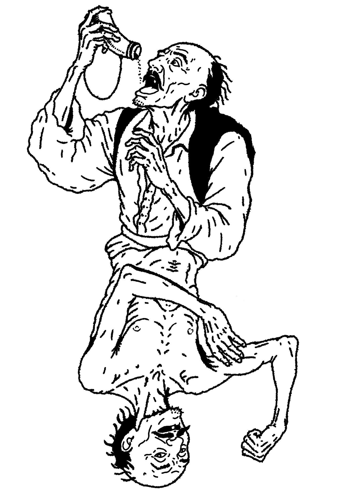
Lead Drinker
On committing two W, you may discard a Potency die
to gain W equal to that Potency.
Spend 1W to take a discarded die, undiscard it and reroll.
If that die rolls 1: lose a tooth
to gain W equal to that Potency.
Spend 1W to take a discarded die, undiscard it and reroll.
If that die rolls 1: lose a tooth
Bacchus Host
You win all wagers.
On scoring four water: gain 1 key and incinerate this card.
On scoring four water: gain 1 key and incinerate this card.
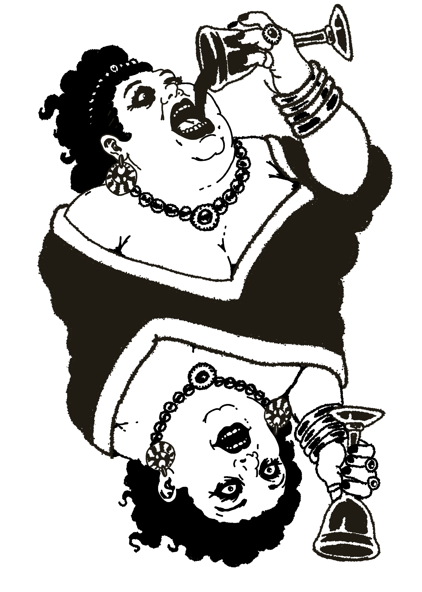
Noble Ghostwriter
Whenever you incinerate a card: gain 1W
Once per round, spend W to rotate a die one face over in either direction
(this does trigger another 'on roll' to the new face)
Once per round, spend W to rotate a die one face over in either direction
(this does trigger another 'on roll' to the new face)
Pilfered Penname
On Scheme start, you may look at the top card of the draw deck.
You may incinerate Pilfered Penname to take it.
On scoring a straight: gain 1 key and incinerate this card.
You may incinerate Pilfered Penname to take it.
On scoring a straight: gain 1 key and incinerate this card.
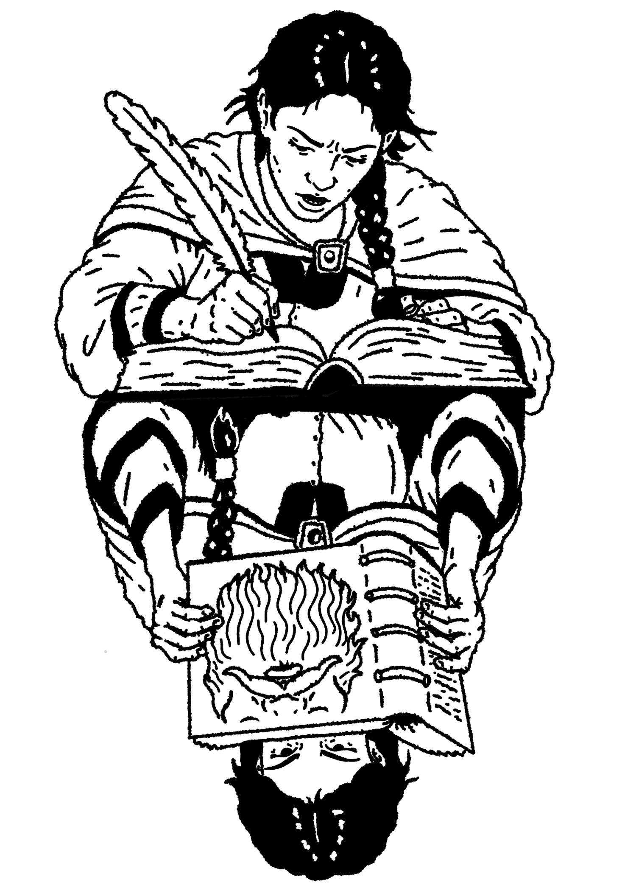
Gin-Soaked Gutter-Sweeper
Whenever you gain W, you may gain +1W
Once per round, spend W to rotate 1 die to match another face that was rolled
(this does trigger another 'on roll' to the new face)
Once per round, spend W to rotate 1 die to match another face that was rolled
(this does trigger another 'on roll' to the new face)
Dependable Tosspot
If you score nothing: gain 3W.
Spend 2W to gain 1 key and incinerate this card.
Spend 2W to gain 1 key and incinerate this card.
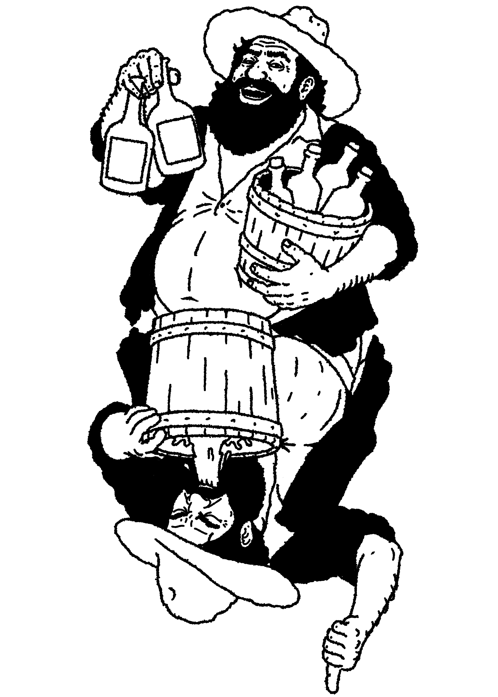
Hollow-Bellied Saint
On rolling a W, you may discard a Potency die to gain W equal to that Potency.
On Scheme start, you may decrease a Potency by -1
On Scheme start, you may decrease a Potency by -1
Pot-Licking Friar
Whenever you discard a die, gain 1W.
Spend 2W to gain 1 key and incinerate this card.
Spend 2W to gain 1 key and incinerate this card.
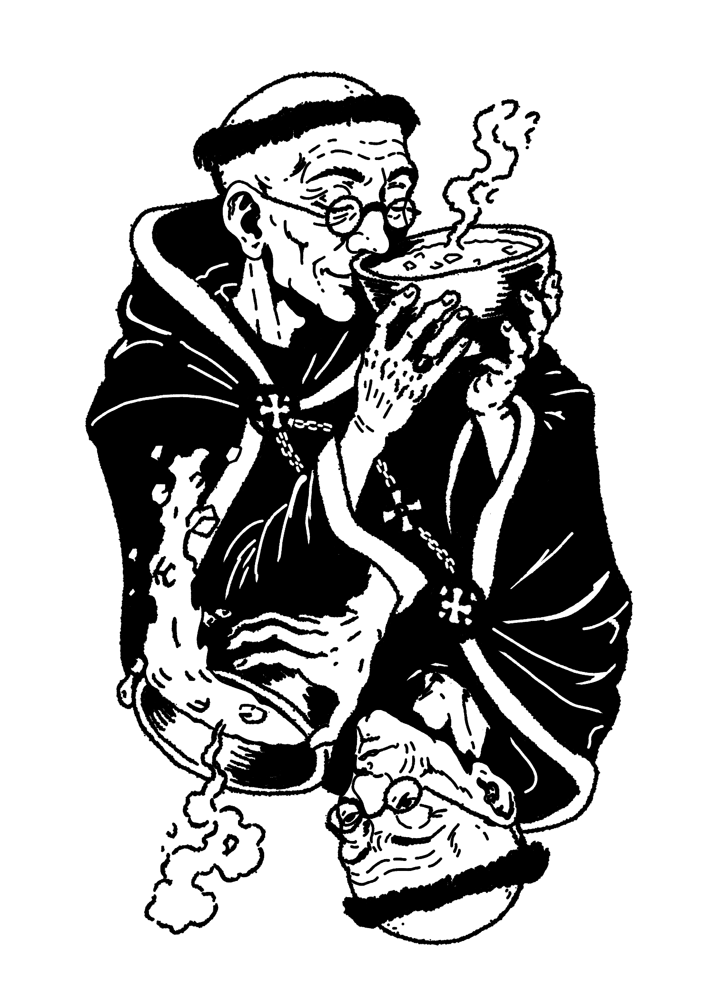
Enthralling Eulogist
On rolling a W, you may discard a Potency die to gain W equal to that Potency.
On Scheme start, you may decrease a Potency by -1
On Scheme start, you may decrease a Potency by -1
Paid Mourner
Once per Scry, spend 2W to score a set again.
(Retriggers on-score, and allows you to make another villager request)
Spend 6 W to gain 1 key
(Retriggers on-score, and allows you to make another villager request)
Spend 6 W to gain 1 key
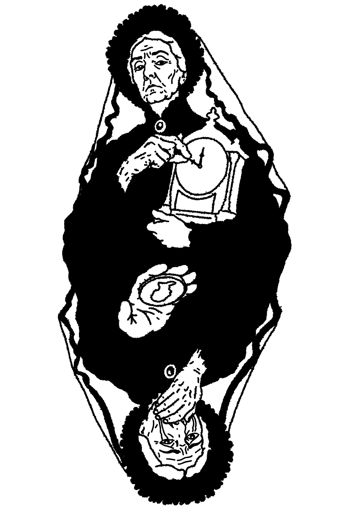
Twofold Widow
Whenever you score a straight: bury 1E on this card
During Scheme, you may spend 1E on this card
to swap in an E for any face
During Scheme, you may spend 1E on this card
to swap in an E for any face
Lethean Elder
On scoring nothing:
incinerate all your cards, including this, to gain 2 keys.
incinerate all your cards, including this, to gain 2 keys.
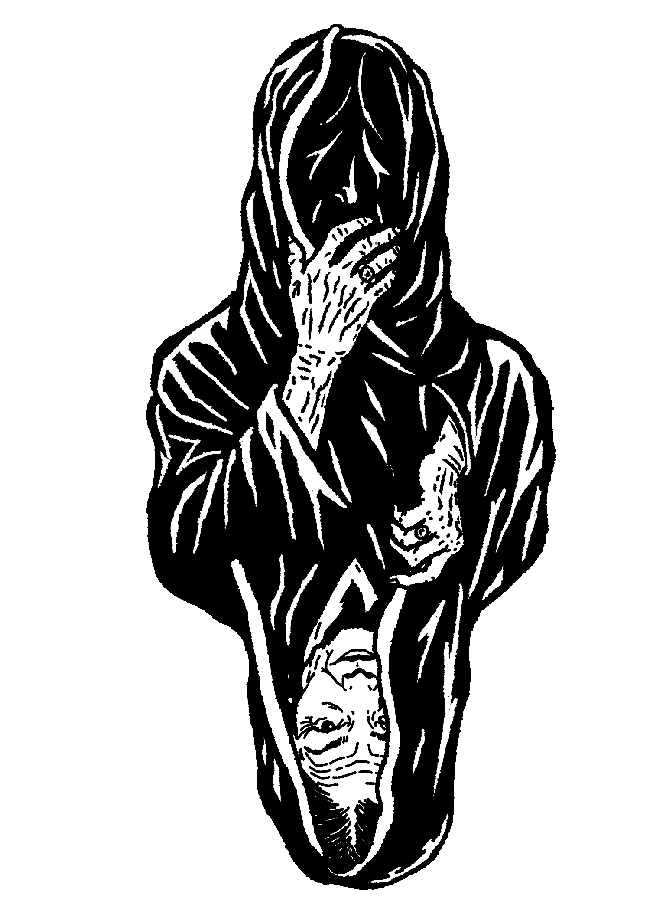
Worm-Brained Absinthard
Whenever you score a straight:
* Bury 2 W on this card
Whenever you score a non-straight or nothing:
* Remove 1 W from this card
* Bury 2 W on this card
Whenever you score a non-straight or nothing:
* Remove 1 W from this card
Fairy-Chaser
Gain all W buried on this card.
If W is exactly 5: gain a tooth and incinerate this card
If W is exactly 5: gain a tooth and incinerate this card
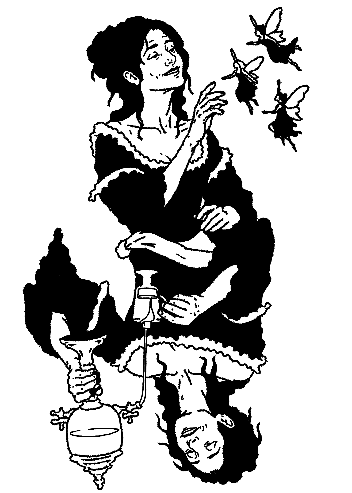
Hairshirt Bearer
When scoring, spend 1 A to:
score a straight with 1 fewer dice than normal.
E.g.: 1,2 could score as Three straight
score a straight with 1 fewer dice than normal.
E.g.: 1,2 could score as Three straight
Fleabitten Penitent
Whenever you score a Five Straight: gain 1 key
Whenever you score anything else, or score nothing:
lose 1 tooth
Whenever you score anything else, or score nothing:
lose 1 tooth
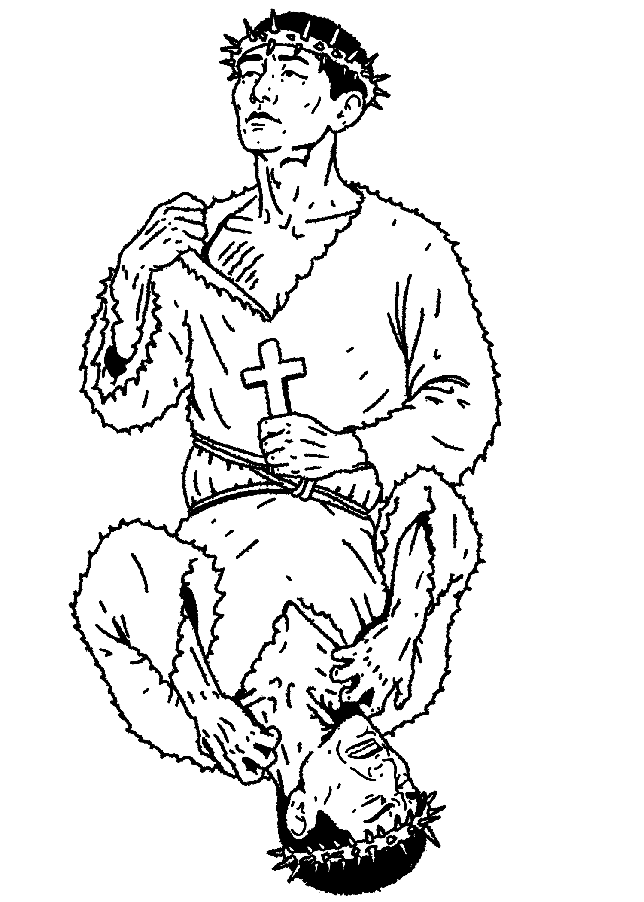
Epicurean Gourmand
After scoring a set with one or more W, you must:
* incinerate a card
* and gain 2Q.
* incinerate a card
* and gain 2Q.
Gout-Ridden Glutton
On Scry start, If you have no discarded dice, choose 1:
* gain 2W
* lose all W and E tokens, incinerate this card, and gain 1 key
* gain 2W
* lose all W and E tokens, incinerate this card, and gain 1 key
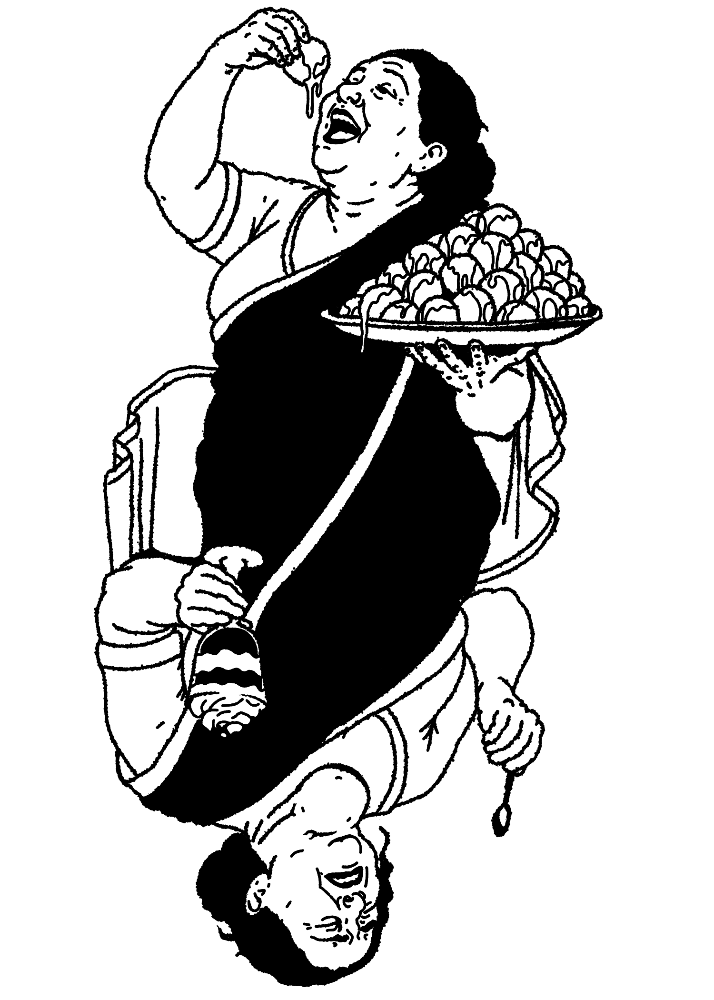
Leech Catcher
On Swig start, you may incinerate a card. If you do:
* Bury 3 F on this card
* During this Swig, you may expend buried F to undiscard dice
(or save it to expend next round)
* Bury 3 F on this card
* During this Swig, you may expend buried F to undiscard dice
(or save it to expend next round)
Bloodless Somnambulist
When you incinerate this, gain a W face.
During Scheme, you may swap it in.
During Scheme, you may swap it in.
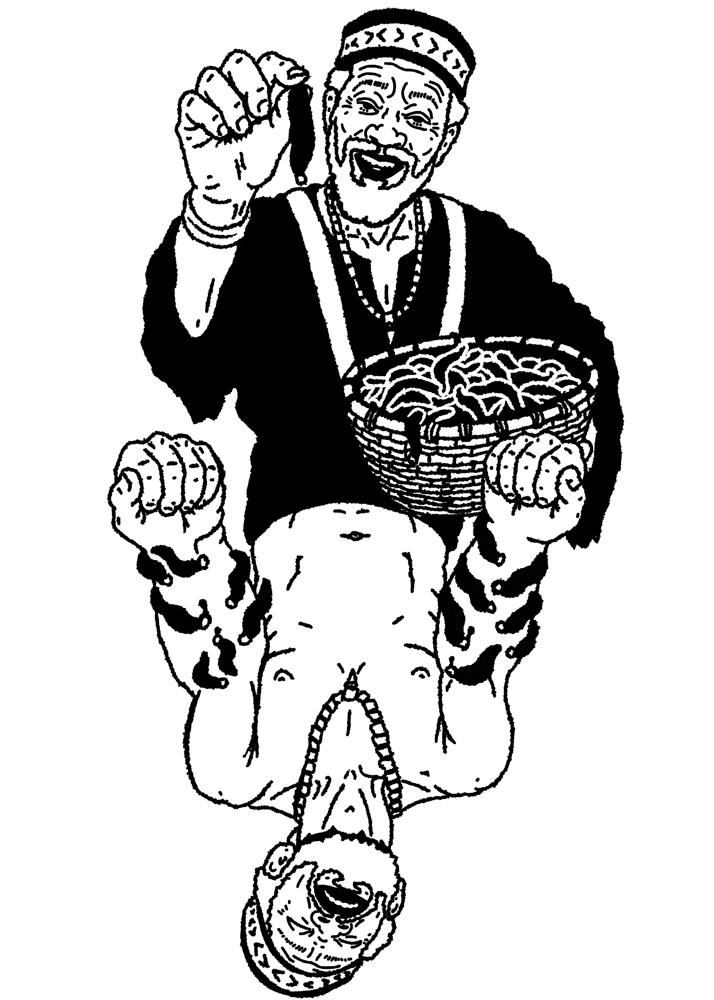
Nubile Nymph
Whenever you could score a Four or Five Straight, you may instead:
* Uncommit a die
* Bury 1W on this card
If you have 3W on this card: incinerate it and gain 1 key
* Uncommit a die
* Bury 1W on this card
If you have 3W on this card: incinerate it and gain 1 key
Virgin Pure
When you incinerate this, gain a W face.
During Scheme, you may swap it in.
During Scheme, you may swap it in.
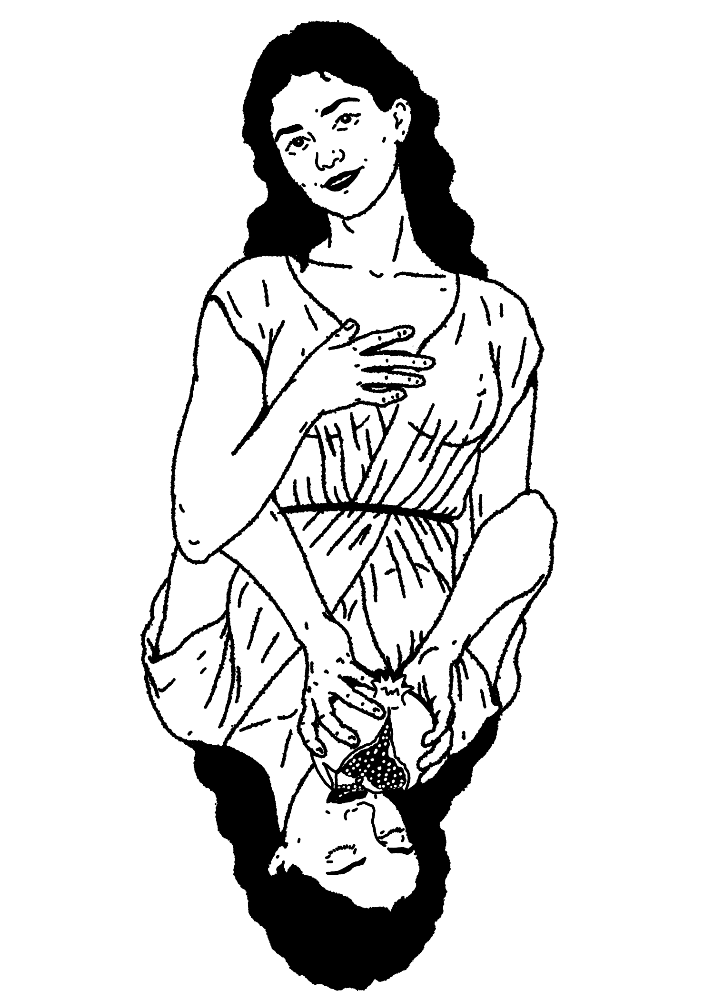
Orgasmic Musician
On Scheme start, you may increase a Potency by +1
Whenever you score Two Color-Pairs or Four Pairs,
bury a W on this card.
Spend 1 buried W to uncommit a die.
Whenever you score Two Color-Pairs or Four Pairs,
bury a W on this card.
Spend 1 buried W to uncommit a die.
Brooding Composer
Relinquish this card, attaching it to an opponent's card.
Whenever that opponent gains an E or W, you gain one as well.
When the attached card is incinerated, this card is incinerated too.
Whenever that opponent gains an E or W, you gain one as well.
When the attached card is incinerated, this card is incinerated too.
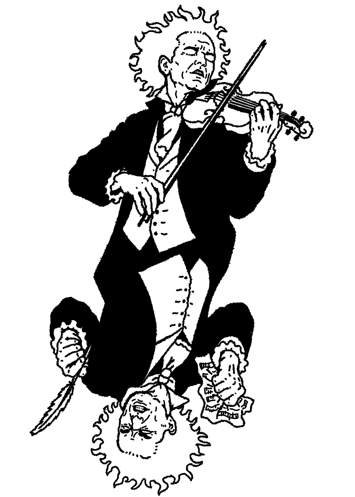
Broken Martyr
On Scry start: lose a tooth, then, gain a tooth
On Scheme start, you may increase a Potency by +1
On Scheme start, you may increase a Potency by +1
Tarred Prophet
Relinquish this card, attaching it to an opponent's card.
Whenever that opponent gains a key, you gain one as well.
When the attached card is incinerated, this card is incinerated too.
Whenever that opponent gains a key, you gain one as well.
When the attached card is incinerated, this card is incinerated too.
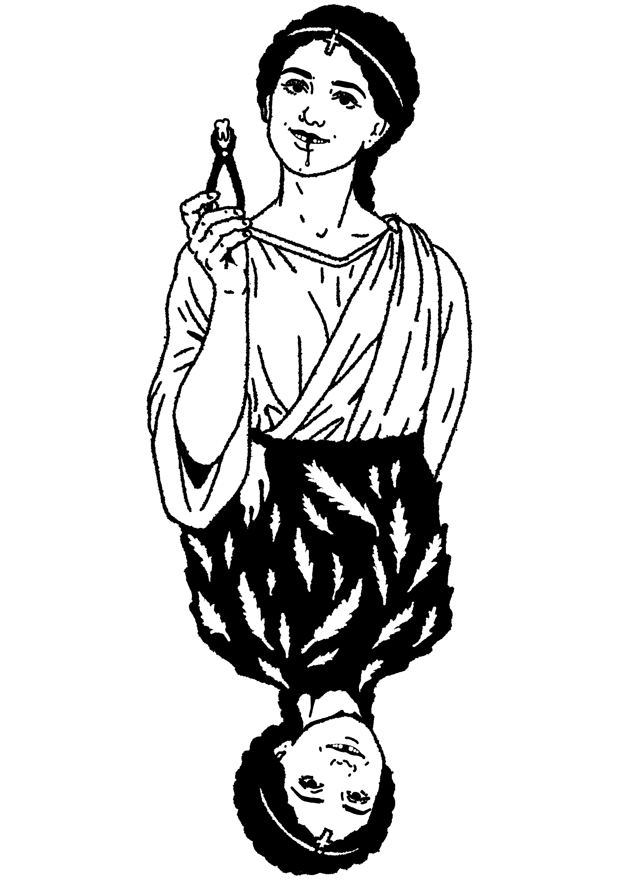
Sulfurous Sage
When you score All Colors, if you have 0 of any E,W,F or A:
gain 1 of each E,W,F and A
gain 1 of each E,W,F and A
Socratic Self-Slayer
Lose two teeth and incinerate this card
to take a key from the player with the most keys.
to take a key from the player with the most keys.
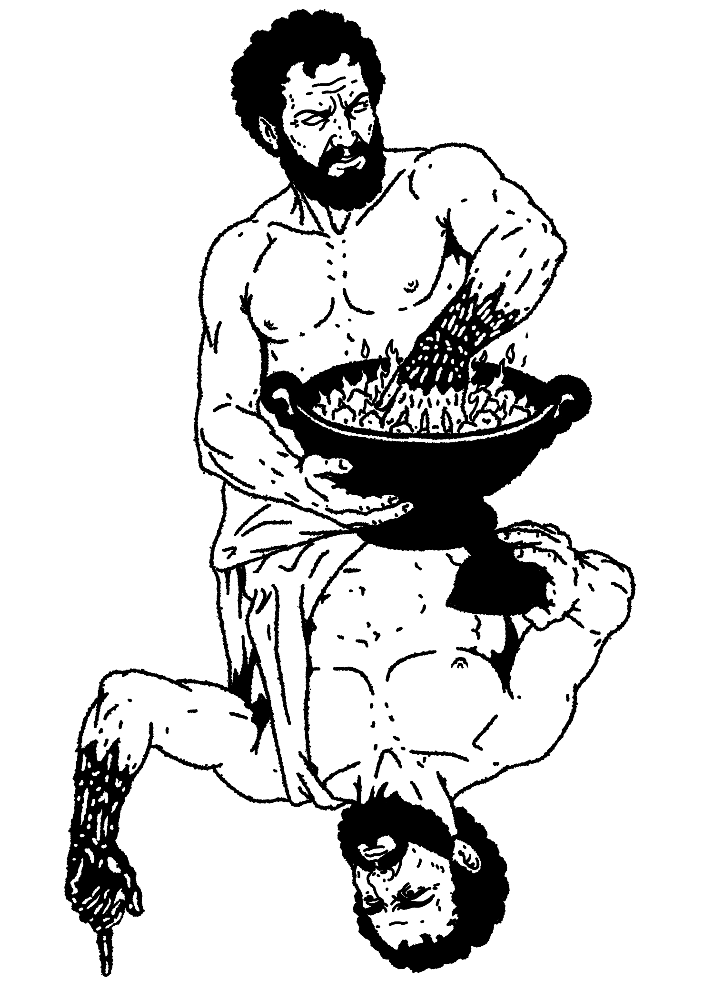
Promethean Pyro
On rolling an A:
* If you have 1 empty card slot, gain W
* If you have 2 empty card slots, gain W and E
* If you have 3 empty card slots, gain W, E and F
* If you have 1 empty card slot, gain W
* If you have 2 empty card slots, gain W and E
* If you have 3 empty card slots, gain W, E and F
Doomed Pandorite
On Scheme start: incinerate the top card of the village deck and gain 1F.
On scoring four fire: gain 1 key and incinerate this card.
On scoring four fire: gain 1 key and incinerate this card.
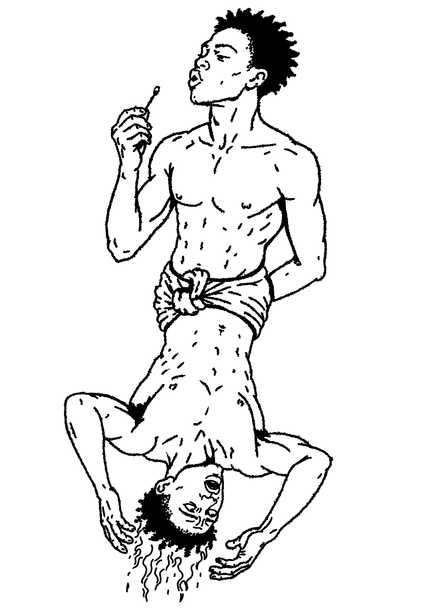
Branded Protégé
Whenever you discard a die, gain 1F.
You may now spend 2F to get 1Q.
You may now spend 2F to get 1Q.
Expendable Assistant
When you lose a tooth, or lose a wager: gain 1Q.
On scoring four fire: gain 1 key and incinerate this card.
On scoring four fire: gain 1 key and incinerate this card.
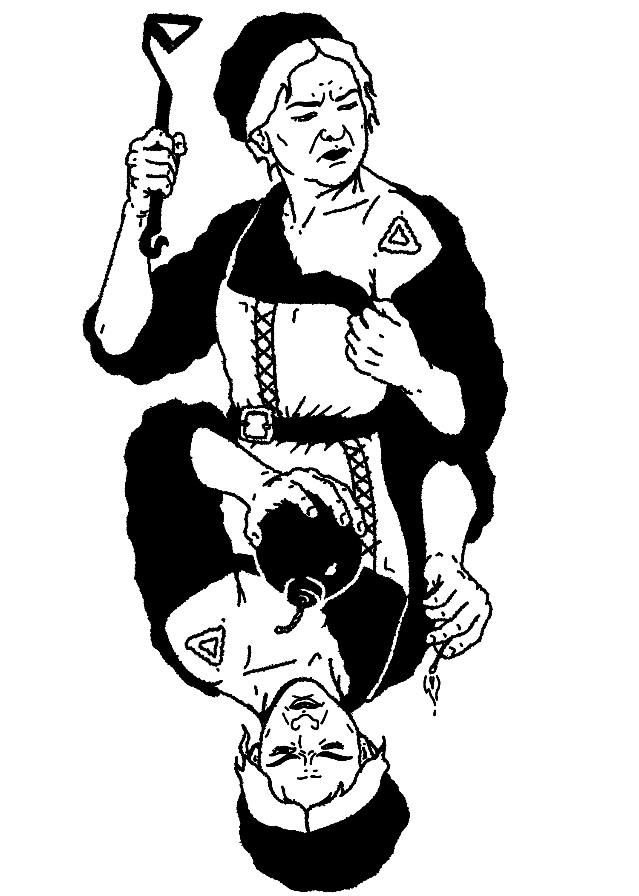
Academic Artillerist
Any time you gain F, you may gain +1F.
When scoring, you always choose before other players.
When scoring, you always choose before other players.
Craven Cannoneer
Opponents cannot make you lose teeth.
Spend 2F to gain 1 key and incinerate this card.
Spend 2F to gain 1 key and incinerate this card.
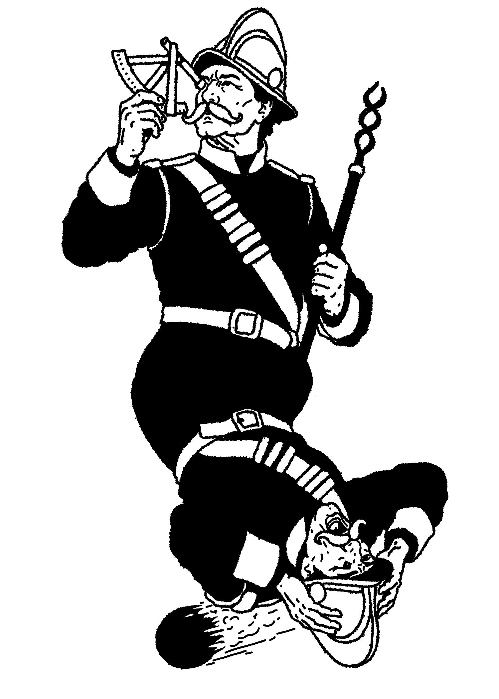
Fire-Drake
On rolling an F, you may discard a Potency die to gain F equal to that Potency.
Whenever a player incinerates a card, you may spend 2F to claim that card instead
Whenever a player incinerates a card, you may spend 2F to claim that card instead
Powder Miller
On Scry start: gain 1F.
Spend 2F to gain 1 key and incinerate this card.
Spend 2F to gain 1 key and incinerate this card.
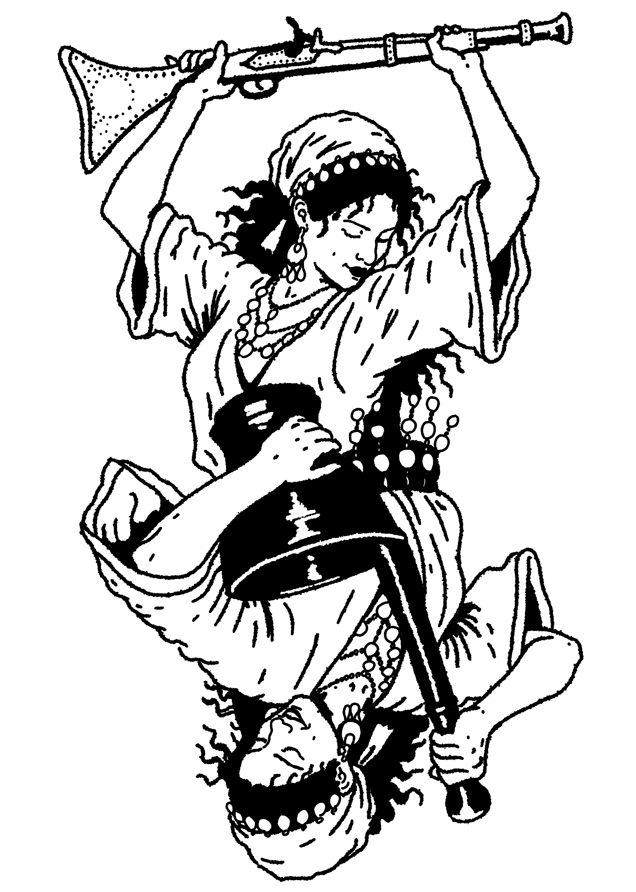
Fingerless Sapper
On rolling an F, you may discard a Potency die to gain F equal to that Potency.
Once per round, you may spend 2F to undiscard all discarded dice
Once per round, you may spend 2F to undiscard all discarded dice
Powder Monkey
Incinerate this card to force all opponents to lose a tooth.
Spend 5F to gain 1 key.
Spend 5F to gain 1 key.
Short-Lived Brute
On rolling a W, you may bury a W on this card.
On rolling a F, you may bury a F on this card.
Incinerate this card: Gain E equal to whichever is lower: this card's W or F.
('None' is indeed 'lower')
On rolling a F, you may bury a F on this card.
Incinerate this card: Gain E equal to whichever is lower: this card's W or F.
('None' is indeed 'lower')
Timeless Warrior-Poet
Whenever you incinerate a card: gain 1F
Spend 1F to uncommit a die
Spend 1F to uncommit a die
Witch Drowner
Whenever you incinerate a card: gain 1Q
On Scheme start, you may decrease a Potency by -1
On Scheme start, you may decrease a Potency by -1
Corrupted Inquisitor
At the end of a round, if you incinerated 2 or more cards:
* gain 1 key
* gain 1 key
Furnace Keeper
On rolling an F, you may incinerate a card to gain 2 F
On Scheme start, you may increase a Potency by +1
On Scheme start, you may increase a Potency by +1
Staunch Stoker
Spend 1Q to resurrect and gain the most recently incinerated card.
Shunned Executioner
On Scheme start: incinerate a card and gain 1Q
Bloodstained Recluse
On scoring Four of Fire:
incinerate all your cards, including this, to gain 2 keys.
incinerate all your cards, including this, to gain 2 keys.
Covert Degenerate
Spend 1F to: Uncommit a die
Spend 2E to: Rotate a die to any face, once per round
On Scheme start, you may increase a Potency by +1
Spend 2E to: Rotate a die to any face, once per round
On Scheme start, you may increase a Potency by +1
Esteemed Burgher
Place 1 tooth upon a Town Square slot.
When players request this slot, they must pay you 2 of any token.
The next time you lose a tooth, lose this reserving tooth.
When players request this slot, they must pay you 2 of any token.
The next time you lose a tooth, lose this reserving tooth.
Closeted Apostate
Whenever you perform an italicized section of a card, gain 1F
On Scheme start, you may decrease a Potency by -1
On Scheme start, you may decrease a Potency by -1
Flaming Heretic
When you incinerate this, gain a F face.
During Scheme, you may swap it in.
During Scheme, you may swap it in.
Strawman
While this is active, replace all italicized sections on your cards with:
spend 1A - if you cannot, lose two teeth
spend 1A - if you cannot, lose two teeth
Burnt Effigy
When you incinerate this, gain a F face.
During Scheme, you may swap it in.
During Scheme, you may swap it in.
Epileptic Metallurgist
Any time you gain A, or F, you may gain one more
On Scheme start, you may decrease a Potency by -1
On Scheme start, you may decrease a Potency by -1
Lithiated Assayer
Whenever you:
incinerate a card OR discard a die OR lose a tooth
bury an F on this card.
Whenever you like, you can gain F off of this card.
If you have 10F on this card, incinerate it, and gain 1 key.
incinerate a card OR discard a die OR lose a tooth
bury an F on this card.
Whenever you like, you can gain F off of this card.
If you have 10F on this card, incinerate it, and gain 1 key.
Unshakable Empiricist
Relinquish this card, attaching it to an opponent's card.
Whenever that opponent gains a key, they gain a tooth instead.
When the attached card is incinerated, this card is incinerated too.
Whenever that opponent gains a key, they gain a tooth instead.
When the attached card is incinerated, this card is incinerated too.
Vivisectionist
Whenever you gain a key, you must instead choose one of your dice to roll:
1-2 = you get 0 keys
3-5 = you get 1 key
6+ = you get 2 keys
1-2 = you get 0 keys
3-5 = you get 1 key
6+ = you get 2 keys
Glass-Eyed Alchemist
If you score nothing, gain A equal to your highest discarded Potency.
Spend 1A to uncommit 2 dice.
Spend 1A to uncommit 2 dice.
Sun-Blinded Prismist
If all your dice are committed and show either A or 6: you win.
On scoring a set with an A: gain 1 key and incinerate this card.
On scoring a set with an A: gain 1 key and incinerate this card.
Tongueless Traitor
Whenever you swap a crystal or Potency, gain 2A
Once per round, spend 1 W to rotate a die to any face
(this does trigger another 'on roll' to the new face)
Once per round, spend 1 W to rotate a die to any face
(this does trigger another 'on roll' to the new face)
Candid Jester
On scoring five A dice or five F dice:
force a player to lose a tooth
On scoring Four Air: you may incinerate this card to gain 1 key.
force a player to lose a tooth
On scoring Four Air: you may incinerate this card to gain 1 key.
Persecuted Paranoiac
Whenever you gain A, you may gain +1A.
Spend 1F to incinerate and redraw a villager in the Town Square.
Spend 1F to incinerate and redraw a villager in the Town Square.
Psychotic Christ
On scoring a set with an F:
lose a tooth to force an opponent to lose a tooth
Spend 2A to gain 1 key and incinerate this card.
lose a tooth to force an opponent to lose a tooth
Spend 2A to gain 1 key and incinerate this card.
Flayed Flagellant
On rolling an A, you may discard a Potency die to gain A equal to that Potency.
Once per round, spend 1 A to rotate a die to any face.
Once per round, spend 1 A to rotate a die to any face.
Lash-Blessed Monk
Whenever another player gains a key, you may incinerate this card to gain a key.
Spend 2A to gain 1 key and incinerate this card.
Spend 2A to gain 1 key and incinerate this card.
Bodysnatcher
Whenever you incinerate a card: gain 1A.
Spend 4A to claim the top card of the discard pile.
Spend 4A to claim the top card of the discard pile.
Overworked Gravedigger
At the start of a Swig, name a set and gain 1A.
You can only score that set this Swig / Scry.
Spend 5A to gain 1 key.
You can only score that set this Swig / Scry.
Spend 5A to gain 1 key.
Mummy Grinder
Whenever you score an 'x of a color': bury 2A on this card
On Swig start, you may spend 1 buried A
to rotate and commit a die.
On losing a tooth, if this card has 6 or more buried A:
Do not lose the tooth and Incinerate this card.
On Swig start, you may spend 1 buried A
to rotate and commit a die.
On losing a tooth, if this card has 6 or more buried A:
Do not lose the tooth and Incinerate this card.
Intrepid Archaeologist
When you gain W or F, convert all your A to E.
Whenever you would lose a tooth, you may instead pay 4 E
Whenever you would lose a tooth, you may instead pay 4 E
Reliquary Larcenist
Whenever you score Four of a Color: gain 3A
Whenever you score Five of a Color: gain 6A
Whenever you score Five of a Color: gain 6A
Finger-Bone Forager
Spend 2Q to gain 1 key and incinerate this card.
During Scheming, you may spend 3A to replace a crystal face with Q
(can be counted as any crystal color)
During Scheming, you may spend 3A to replace a crystal face with Q
(can be counted as any crystal color)
Footnoted Scholar
On scoring a set with F, choose one:
* You gain 1 F
* An opponent loses 3 tokens of their choice
* You gain 1 F
* An opponent loses 3 tokens of their choice
Pedantic Pedagogue
Relinquish this card, attaching it to an opponent's card.
When they invert a card, they lose 1 tooth.
After the attached card is incinerated, this card is incinerated too.
When they invert a card, they lose 1 tooth.
After the attached card is incinerated, this card is incinerated too.
Shuar Headshrinker
Relinquish this card, attaching it to an opponent's card.
On Scheme start, that opponent loses 1 tooth.
When the attached card is incinerated, this card is incinerated too.
On Scheme start, that opponent loses 1 tooth.
When the attached card is incinerated, this card is incinerated too.
Ayahuascite
Every time you manually rotate a die, bury 1A on this card.
Whenever you score nothing, you must gain all A buried on this card.
If you gain 5A, incinerate this card, and gain a key.
Whenever you score nothing, you must gain all A buried on this card.
If you gain 5A, incinerate this card, and gain a key.
Mercurial Monomaniac
Whenever you incinerate a card, bury 1 F on this card.
If you have 5F on this card, incinerate it, and gain a key.
Spend 1 buried F on this card to rotate a die to any face
If you have 5F on this card, incinerate it, and gain a key.
Spend 1 buried F on this card to rotate a die to any face
Haunted Mind
Relinquish this card, attaching it to an opponent's card.
Whenever that opponent incinerates a card,
they must incinerate an additional card.
After the attached card is incinerated, this card is incinerated too.
Whenever that opponent incinerates a card,
they must incinerate an additional card.
After the attached card is incinerated, this card is incinerated too.
Driveling Chemist
On scheme start, if you have the fewest keys, gain an E, W, F and A
Feverish Scribe
Discard two dice to bury 1A on this card.
If >7A buried, 'X keys' enlightenment threshold to end the game
becomes equal to the A on this card.
If >7A buried, 'X keys' enlightenment threshold to end the game
becomes equal to the A on this card.
Autoerotic Anesthetist
When performing an italic section of any card,
you may substitute it with incinerate Autoerotic Anesthetist
you may substitute it with incinerate Autoerotic Anesthetist
Back-Alley Butcher
Whenever you gain a key:
* if you have tokens, you must lose them all, and gain an additional key
* if you do not, you must lose a tooth, and gain an additional key
* if you have tokens, you must lose them all, and gain an additional key
* if you do not, you must lose a tooth, and gain an additional key
Placenta Purloiner
Whenever another player loses a tooth, bury 1Q here.
On Scheme start, spend 2 buried Q to regain a tooth.
On Scheme start, spend 2 buried Q to regain a tooth.
Viscera Monger
Whenever you incinerate a card,
you may spend 4E to get 4A
you may spend 4E to get 4A
Dubious Demonologist
On rolling an A, you may discard a Potency die to gain A equal to that Potency.
During Scheming, you may spend 3A to replace a crystal face with Q
(can be counted as any crystal color)
During Scheming, you may spend 3A to replace a crystal face with Q
(can be counted as any crystal color)
Failed Exorcist
This card copies the ability of the card to the left.